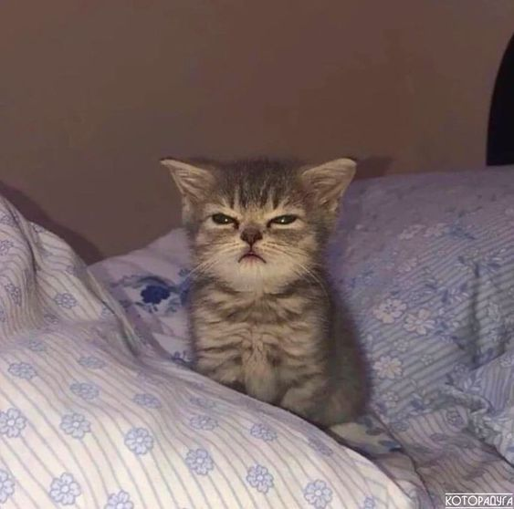

Мурзякино

Белая Пуся
Возраст: 5 лет.
Порода: Пушистик.
Болезни: Нет.
Статус: Ищет хозяина.
Порода: Пушистик.
Болезни: Нет.
Статус: Ищет хозяина.
Дружелюбный, ласковый, ручной.
Пуся — изящная кошка с густой, мягкой шерстью и манящими зелеными глазами. Пуся обожает уютные
уголки, где можно расслабиться, и всегда готова подарить свою ласку и преданность своему
хозяину.

Серый Мурзик
Возраст: 3 года.
Порода: Британец.
Болезни: Нет.
Статус: Ищет хозяина.
Порода: Британец.
Болезни: Нет.
Статус: Ищет хозяина.
Игривый, любит лазить по деревьям.
Мурзик — кот с элегантной серой шерстью и великолепными желтыми глазами. Любит активные игры и
прыгать по высоким местам. Очень ласковый и привязанный к человеку.

Рыжий Рыжик
Возраст: 2 года.
Порода: Домашняя кошка.
Болезни: Нет.
Статус: Ищет хозяина.
Порода: Домашняя кошка.
Болезни: Нет.
Статус: Ищет хозяина.
Любит играть с мячиками.
Рыжик — очаровательный кот с пушистой рыжей шерстью. Любит активные игры и общество других
животных. Идеальный компаньон для дома с детьми.
Грациозная Луна
Возраст: 1.5 года.
Порода: Сиамская.
Болезни: Нет.
Статус: Ищет хозяина.
Порода: Сиамская.
Болезни: Нет.
Статус: Ищет хозяина.
Игривая и любознательная.
Луна — красивая кошка с голубыми глазами и мягкой шелковистой шерстью. Обожает играть с
игрушками и ласкаться. Готова принести свет и радость в ваш дом.